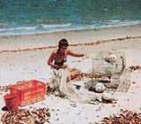
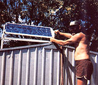

This couple didn't just dream of shucking it all and moving to a South Sea island-they did it!
Six years ago, my husband and I put the trappings of suburban Australia behind us and went to live on Wild Cattle Island, a tiny puddle of sand off the Queensland coast. Although there are a few holiday homes that share our island, we're the sole permanent residents, and we lead what some would say is an idyllic life. (And, to be honest, we'd have to agree with them!)
From the beginning, in fact, our island lifestyle has been pure pleasure for us. We were in our late forties when we made the move, with five children grown and independent, and we had no more taste for city life than we did for prepackaged, preservative-laced foods. Everything around us seemed deodorized, synthesized, and sanitized. We yearned for realness, for a life truly of our own making. And nothing, we decided, would be more real, or more satisfying, than living on an island on our own.
So we bought a small piece of Wild Cattle Island-just enough property to live on and support some fruit trees, a garden, and some chickens-and today we find ourselves in the best of both worlds: We're close to the mainland (we do like to go shopping and socialize on occasion), but we're also just 25 miles from the Great Barrier Reef. The center of the island is ancient forest-with huge, primeval trees that probably once sheltered aboriginal tribes-and the perimeter is sandy beach. Kangaroos in all shapes and sizes bound to and fro. We breathe unpolluted air and drink rainwater untainted by chemicals. And, instead of the constant cacophony of trucks and traffic and sirens, we hear only the cry of sea birds and the rhythmic breaking of waves against the shore.
Before you get the impression that we lead a completely carefree life, I should point out that there are serpents in this Eden of ours-both literally and otherwise. There are many poisonous brown snakes here . . . dangerous box jellyfish sometimes inhabit the waters . . . and when there's no breeze blowing, clouds of biting sand flies come out of the mangroves to pester us.
Then too, more often than not we go to bed exhausted from a day spent tending our garden and chickens, harvesting food from the sea, maintaining our home and equipment, and cutting firewood (there's a great deal of dead timber here, so we don't have to sacrifice living trees for fuel). Ours isn't exactly an easy life, but it is a very satisfying one. Fortunately, God endowed both of us with practical abilities. (There isn't much in the way of machinery that my man can't fix.) And when we run up against a particularly perplexing problem or need, we simply put our heads together and figure something out; more often than not, we work by trial and error, but the point is, we do eventually find a solution!
There's no electrical service on our island, so we've had to come up with alternatives. A 3-kv diesel generator, bought secondhand, is our primary provider of current, but we've also wired our house for 12-volt electricity produced by two 37-watt solar-cell panels. Our refrigerator-freezer runs on bottled LP gas. And we get our hot water from a solar heating system we designed and built ourselves-mostly from scrap. We have a gas stove for cooking, but instead I usually whip up meals on the wood-burning stove we've put under a canopy just outside the back door.
Rain provides us with most of our water, but when nature fails to send down enough, a forty-year-old windplant refills our depleted tanks by pumping up beautifully clear, sweet water from underground soaks. The mill, purchased from an elderly woman on the mainland, arrived here by barge in countless pieces. We felt like geniuses when we finally managed to put the jigsaw together!
Our garden provides us with fresh vegetables and herbs, and we've developed a mini-papaya plantation, which gives us a good supply of the tasty fruit, with enough surplus to barter to friends for favors. We've also planted a delicious variety of other fruits: Mangoes, Brazilian cherries, custard apples, guavas, avocados, grapes, and passion fruit all flourish here.
We grow everything organically; we use no man-made chemicals. Our soil is very sandy, so we apply lots of mulch and compost, and add seaweed, fish meal, and chicken manure for fertilizer. A homemade garlic spray does a good job of keeping insect pests at bay, and we've also enlisted the help of bug-eating birds by providing them with a birdbath and plantings of native berry trees.
To preserve the produce that we don't use fresh, we've constructed a small solar food dryer from scrap lumber. It's just a box, painted black, with a top of plate glass and with holes drilled in the base and sides to circulate hot air. The device works so well that we've built a second solar dryer (it has mesh, rather than wooden, sides) for processing seafood scraps: heads, skins, and bones, which-once they're dehydrated-we grind and use as fish meal fertilizer or as a supplement to our chickens' free-range diet.
We also have six beehives housing a total of about 200,000 bees-more than enough to give us ample honey for our own use (we eat no sugar) and some extra to barter. We try to produce most of our other provisions ourselves, too. We make our own bread, yogurt, wine, beer, mead, muesli cereal, soap, shampoo, household cleaners, and more-all with the help of a few instructive books.
Reading, in fact, is one of our favorite leisure activities (yes, we do make time for just stretching out and relaxing!). We're particularly fond of self-sufficiency magazines such as MOTHER and her counterpart here in Australia, Grass Roots. [EDITOR'S NOTE: Subscriptions to Grass Roots magazine are available for $18 a year from Grass Roots, Box 764 Post Office, Shepparton 3630, Australia.] And when the mood strikes us, we also enjoy practicing various crafts: ceramics, woodworking, batik, painting, screen printing, and shell work.
As far as social life goes . . . well, you do have to like your own company to live as we do (there isn't a single telephone on the island!). And just being a happy couple isn't enough. You also have to be mates, companions, sparring partners, and more. And we do have out disagreements sometimes; after all, we're only human. But we're never lonely. In fact, we much prefer weekdays, when none of the holiday homes are occupied and we share our island only with the teeming wildlife.
In addition to a variety of birds and native kangaroos, echidnas (otherwise known as spiny anteaters) populate the island, trundling their quill-covered bodies amongst the tree roots and fallen branches, their long, ever-inquisitive noses seeking out insect prey. Nocturnal possums scamper through our papaya groves, helping themselves to the ripening fruit. (We deter the rascals by placing bags over the papayas, but we don't mind allowing them a share if there's plenty.) And quail and scrub turkeys scratch amongst the undergrowth.
Life here has its own rhythm; weather and tides are the only clocks we heed. We have a sundial in the garden, just in case we ever need to know the time-but we seldom use it. We're simply too busy charting-and thoroughly enjoying-our own course in life, at our own unhurried pace.
|
 The sea around us is an excellent provider. Here I'm tending to our net and crab traps on the beach in front of our home. |
 We rely on a diesel generator for most of our electricity, but we also use current produced by two 37-watt solar-cell panels. |
|